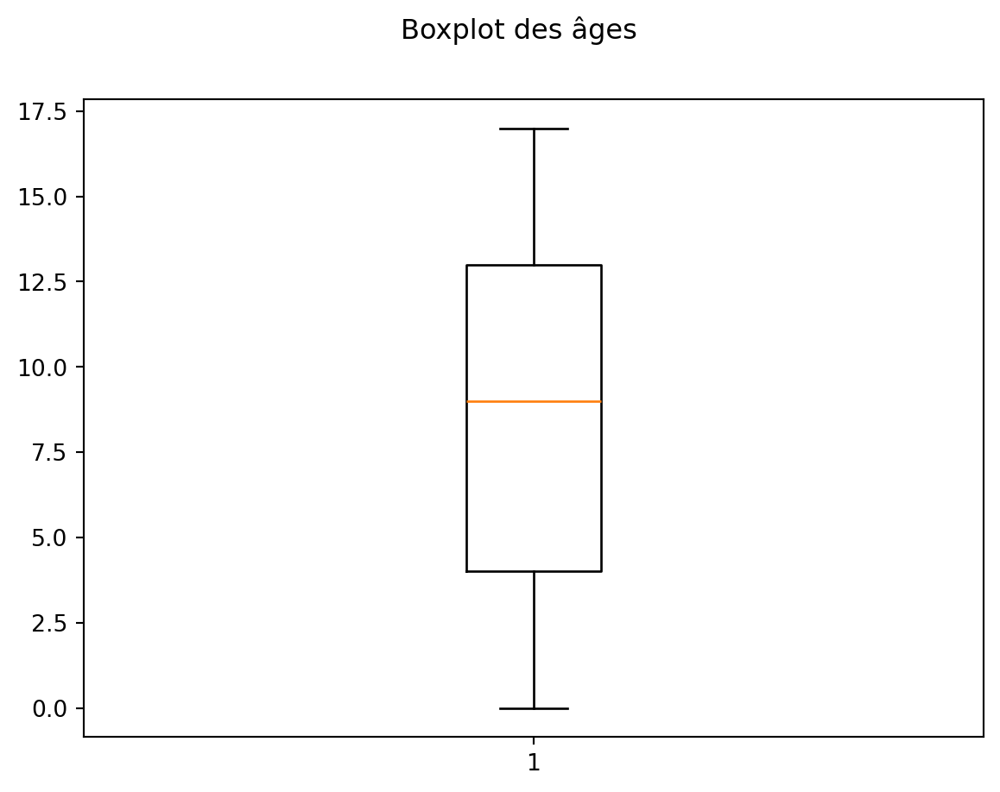
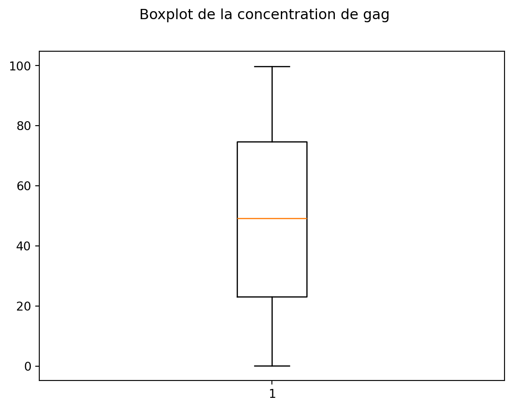
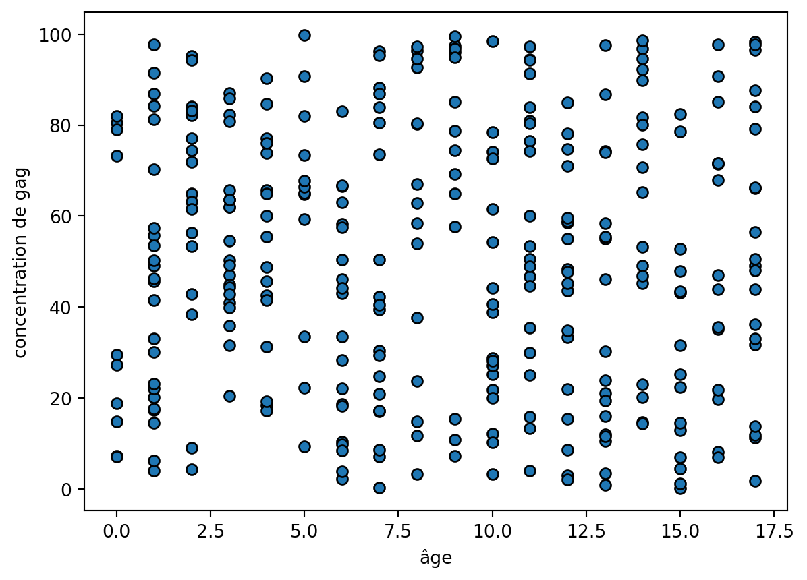
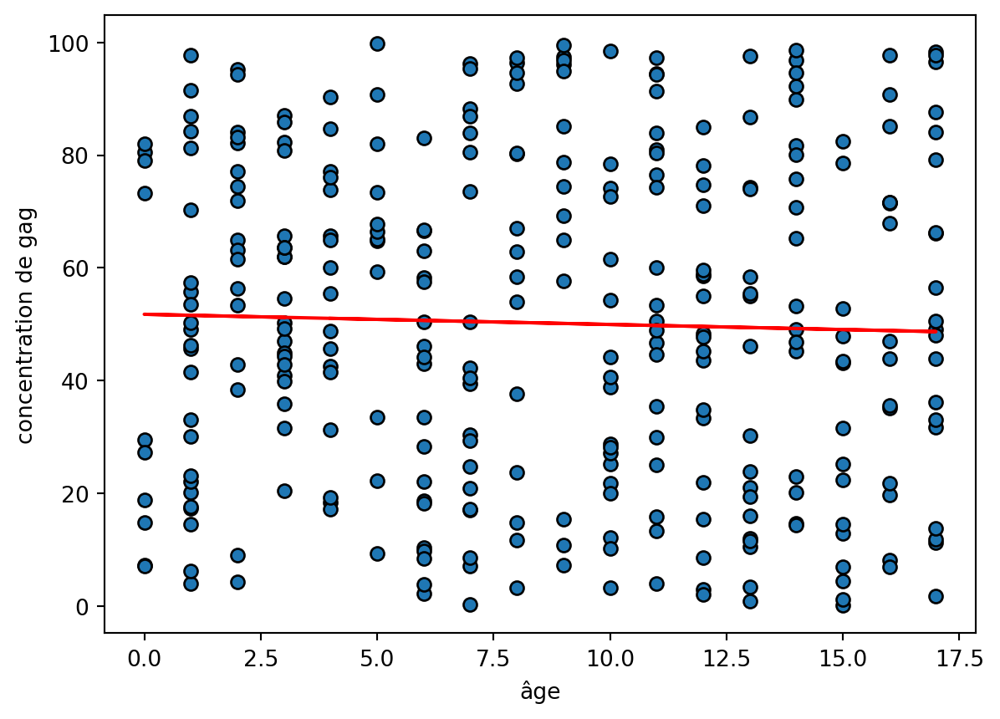
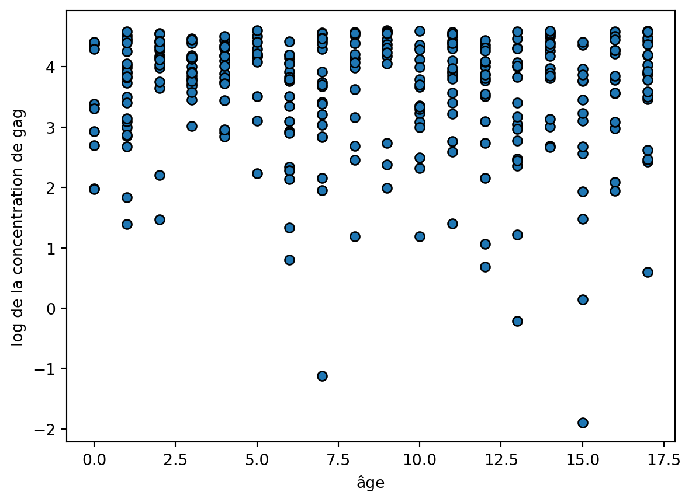
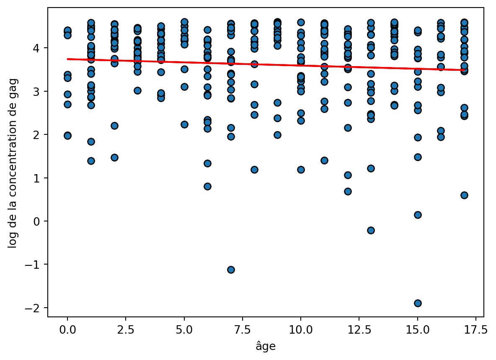
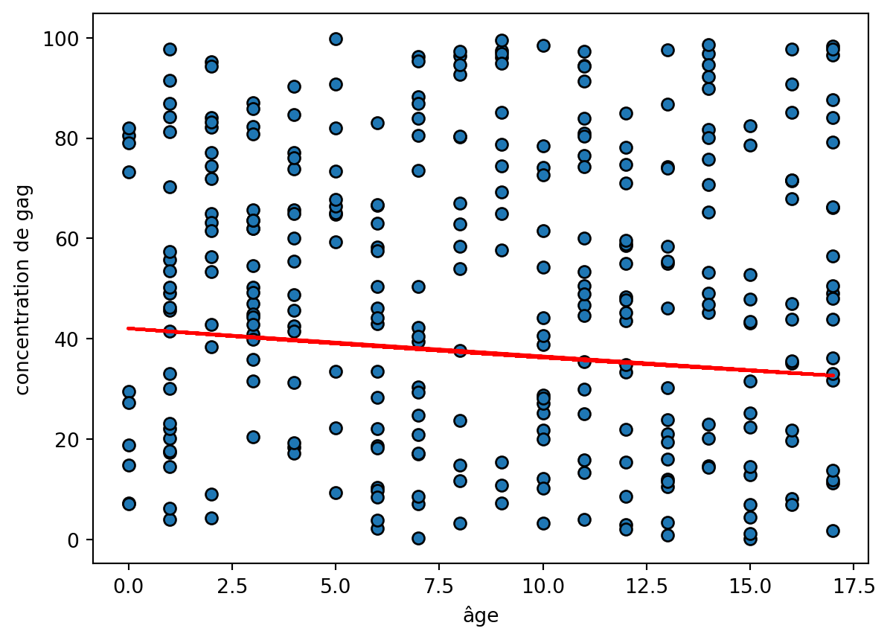

import numpy as np
import pandas as pd
import matplotlib.pyplot as plt
import seaborn as sns
from sklearn.linear_model import LinearRegression Statistique descriptive bivariée
Le but de ce projet est de s’entraîner à explorer les liaisons entre deux variables.
- Importations de bibliothèques
1 - Régression linéaire à la main
Le jeu de données gag.csv contient l’âge (en année) et une mesure de concentration en glycosaminoglycane (gag) dans l’urine pour une population d’enfants de 0 à 17 ans.
1 - Importer le jeu de donnée
gag = pd.read_csv('gag.csv')2 - Combien y a-t-il d’individus dans ce jeu de données ?
Dimensions du data frame
gag.shape(314, 2)Il y a 314 individus (lignes).
3 - Quel est l’âge moyen des individus ? Quel est leur âge médian ?
gag.describe()| Age | GAG | |
|---|---|---|
| count | 314.000000 | 314.000000 |
| mean | 8.550955 | 50.216572 |
| std | 5.158722 | 29.043797 |
| min | 0.000000 | 0.150561 |
| 25% | 4.000000 | 22.998461 |
| 50% | 9.000000 | 49.190105 |
| 75% | 13.000000 | 74.712759 |
| max | 17.000000 | 99.827356 |
L’âge moyen est 5.28 ans, l’âge médian 4.10 ans.
3 - Tracer la boîte à moustaches de l’âge.
fig, ax=plt.subplots()
ax.boxplot(gag.Age)
fig.suptitle('Boxplot des âges')Text(0.5, 0.98, 'Boxplot des âges')
4 - Quel est la concentration moyenne en gag ? Quel est la concentration médiane ?
gag.describe()| Age | GAG | |
|---|---|---|
| count | 314.000000 | 314.000000 |
| mean | 8.550955 | 50.216572 |
| std | 5.158722 | 29.043797 |
| min | 0.000000 | 0.150561 |
| 25% | 4.000000 | 22.998461 |
| 50% | 9.000000 | 49.190105 |
| 75% | 13.000000 | 74.712759 |
| max | 17.000000 | 99.827356 |
La concentration moyenne est de 13.17, la concentration médiane de 10.6.
5 - Tracer la boîte à moustaches de la concentration de gag.
fig, ax=plt.subplots()
ax.boxplot(gag.GAG)
fig.suptitle('Boxplot de la concentration de gag')Text(0.5, 0.98, 'Boxplot de la concentration de gag')
6 - Tracer le nuage de points de la concentration de gag en fonction de l’âge.
fig, ax=plt.subplots()
ax.scatter(gag.Age, gag.GAG, edgecolors='k')
ax.set_xlabel('âge')
ax.set_ylabel('concentration de gag')Text(0, 0.5, 'concentration de gag')
7 - Semble-t-il y avoir une relation linéaire entre les variables ?
Il semble y avoir une liaison décroissante forte, mais pas vraiment linéaire.
8 - Calculer les coefficients de la droite de régression de la concentration de gag en fonction de l’âge.
On rappelle que la droite de régression de \(y\) par rapport à \(x\) est la droite d’équation \(y = \beta_0 +\beta_1 x\) avec
\[ \beta_0 = \bar{y}-\beta_1 \bar{x} \text{,} \quad \beta_1 = \frac{C(x,y)}{V(x)}. \]
C = np.cov(gag.Age, gag.GAG)
b1 = C[0][1]/C[0][0]
b0 = np.mean(gag.GAG)-b1*np.mean(gag.Age)
print(b0,b1)51.76076990236237 -0.180587729958357049 - Ajoutez la droite de régression sur votre nuage de points.
fig, ax=plt.subplots()
ax.scatter(gag.Age, gag.GAG, edgecolors='k')
ax.plot(gag.Age,b0+b1*gag.Age, color='r')
ax.set_xlabel('âge')
ax.set_ylabel('concentration de gag')Text(0, 0.5, 'concentration de gag')
10 - L’ajustement linéaire est-il visuellement satisfaisant ?
Il semble acceptable pour les valeurs loin de 0, mais très mauvais pour les toutes petites valeurs.
11 - Calculez le coefficient de détermination
\[ R^2 = \frac{SC_reg}{SC_tot} = \frac{variation expliquée}{variation totale}. \] On rappelle que pour la régression de \(y\) par rapport à \(x\), on a \[ SC_{tot}=\sum_{k=1}^n(y_k-\overline y)^2=nV(y),\quad SC_{reg}=\sum_{k=1}^n(\hat y_k-\overline y)^2, \] avec \(\hat y_k = \beta_0 + \beta_1 x_k\). On rappelle également que le coefficient de détermination est égal au coefficient de corrélation au carré.
gag.corr()| Age | GAG | |
|---|---|---|
| Age | 1.000000 | -0.032076 |
| GAG | -0.032076 | 1.000000 |
gag.corr()**2| Age | GAG | |
|---|---|---|
| Age | 1.000000 | 0.001029 |
| GAG | 0.001029 | 1.000000 |
On trouve qu’un peu moins de 50% de la variabilité de la concentration en gag est expliquée par la régression.
Avec un calcul direct
# somme des carres totale
SCtot = len(gag.GAG)*np.var(gag.GAG)
# residus
gagchap = b0+b1*gag.Age
# somme des carres expliquee
SCreg = sum((gagchap-np.mean(gag.GAG))**2)
# R2
R2 = SCreg/SCtot
print(R2)0.0010288544093309808On trouve bien sûr la même chose.
12 - L’ajustement linéaire est-il satisfaisant ?
Non car moins de 50% de la variabilité est expliquée par la régression.
13 - Utiliser la droite de régression pour prédire la concentration de gag à 18 ans. Qu’en pensez-vous ?
On prédit une valeur négative, ce qui est incohérent. Ceci est dû au mauvais ajustement de la droite de régression.
2 - Régression non linéaire à la main
Pour améliorer la qualité de l’ajustement, on peut faire une transformation des données. La visualisation du nuage de points aide à deviner une forme adaptée.
On continue à travailler sur le jeu de données gag.csv.
1 - Créer un vecteur lgag égal au logarithme de la concentration en gag.
lgag = np.log(gag.GAG)2 - Tracer le nuage de points du logarithme de la concentration de gag en fonction de l’âge.
fig, ax=plt.subplots()
ax.scatter(gag.Age, lgag, edgecolors='k')
ax.set_xlabel('âge')
ax.set_ylabel('log de la concentration de gag')Text(0, 0.5, 'log de la concentration de gag')
3 - Calculer les coefficients de la droite de régression du logarithme de la concentration de gag en fonction de l’âge.
C = np.cov(gag.Age, lgag)
b1 = C[0][1]/C[0][0]
b0 = np.mean(lgag)-b1*np.mean(gag.Age)
print(b0,b1)3.7389692885116625 -0.014858776791825144 - Ajoutez la droite de régression sur votre nuage de points.
fig, ax=plt.subplots()
ax.scatter(gag.Age, lgag, edgecolors='k')
ax.plot(gag.Age,b0+b1*gag.Age, color='r')
ax.set_xlabel('âge')
ax.set_ylabel('log de la concentration de gag')Text(0, 0.5, 'log de la concentration de gag')
5 - Evaluer la qualité de l’ajustement linéaire.
Calculons le coefficient de détermination
# somme des carres totale
SCtot = len(lgag)*np.var(lgag)
# residus
gagchap = b0+b1*gag.Age
# somme des carres expliquee
SCreg = sum((gagchap-np.mean(lgag))**2)
# R2
R2 = SCreg/SCtot
print(R2)0.0059852483371809475On trouve maintenant que 72% de la variabilité est expliquée par la régression. C’est beaucoup mieux.
6 - Quelle est alors la relation entre l’âge et le logarithme de la concentration de gag fournie par cette droite ? La représenter graphiquement.
On a \(\log(\text{gag})=\beta_0+\beta_1 \text{age}\) ce qui est équivalent à \(\text{gag}=\exp(\beta_0+\beta_1 \text{age})\).
fig, ax=plt.subplots()
ax.scatter(gag.Age, gag.GAG, edgecolors='k')
ax.plot(gag.Age,np.exp(b0+b1*gag.Age), color='r')
ax.set_xlabel('âge')
ax.set_ylabel('concentration de gag')Text(0, 0.5, 'concentration de gag')
7 - Utiliser cette relation pour prédire la concentration de gag à 18 ans.
np.exp(b0+b1*18)np.float64(32.185347624152215)